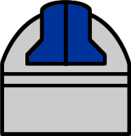

|  |
Módulo de Despliegue de Imágenes Astronómicas en Tiempo Real (MODIA)
En el Sistema Telescopio Jürgen Stock, el MODIA se encarga de desplegar en tiempo real, las imágenes captadas por la cámara electrónica digital que forma parte de este sistema. Esta herramienta está conformada principalmente por tres componentes: adquisición, procesamiento y despliegue de la imagen digital. Ese software está diseñado bajo una arquitectura cliente - servidor. Se propone una modificación del Método de Expansión Lineal del Contraste para mejorar la apariencia visual de las imágenes astronómicas dentro de la clase de procesamiento.
|